开幕式

傅莹
全国人大外事委员会副主任委员

张爽
桃花源⽣态保护基⾦会CEO
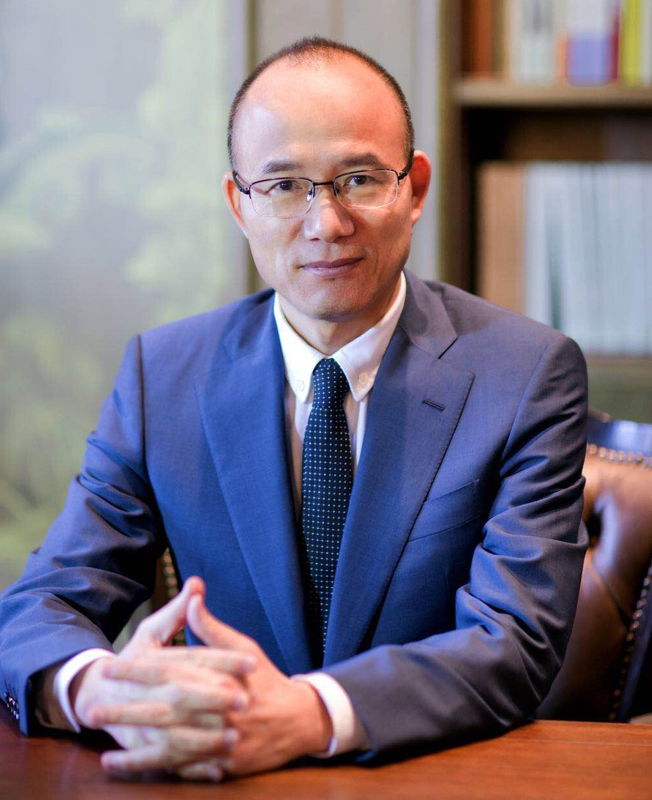
郭广昌
复星国际董事长

Philipp Rösler
慈航公益基金会首席执行官
变革与机遇：塑造中国新投资领域

吴港平
安永大中华首席合伙人

温晓东
韬蕴资本集团创始人及首席执行官

Guang Yang
海航集团北美总裁

Yup S. Kim
APFC高级投资经理
技术革新的挑战与机遇
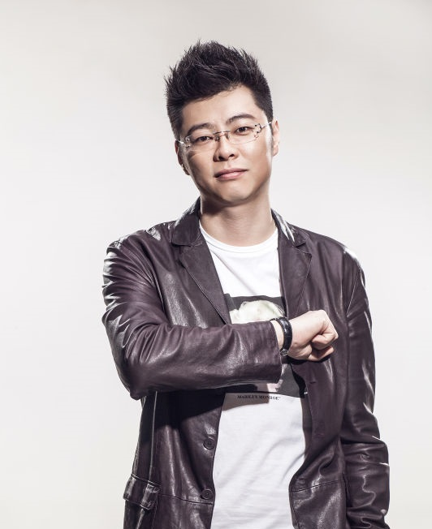
应书岭
英雄互娱创始人

陈伟星
快的打车创始人

戴科彬
猎聘创始人

Jeff Garzik
Bloq创始人

帅初
Qtum创始人
互信与挑战：新时代下的中美关系
傅莹
全国人大外事委员会副主任委员

陆克文
澳大利亚前总理
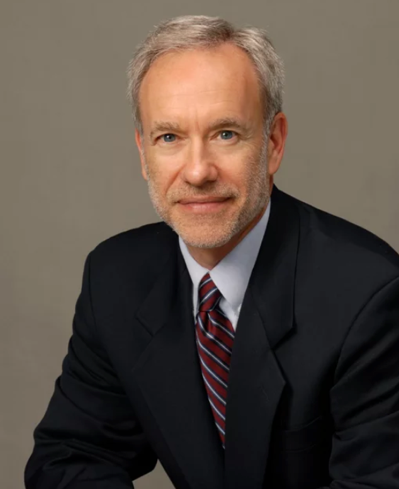
Avery Goldstein
宾大当代中国研究中心主任
中国地产转型新方向
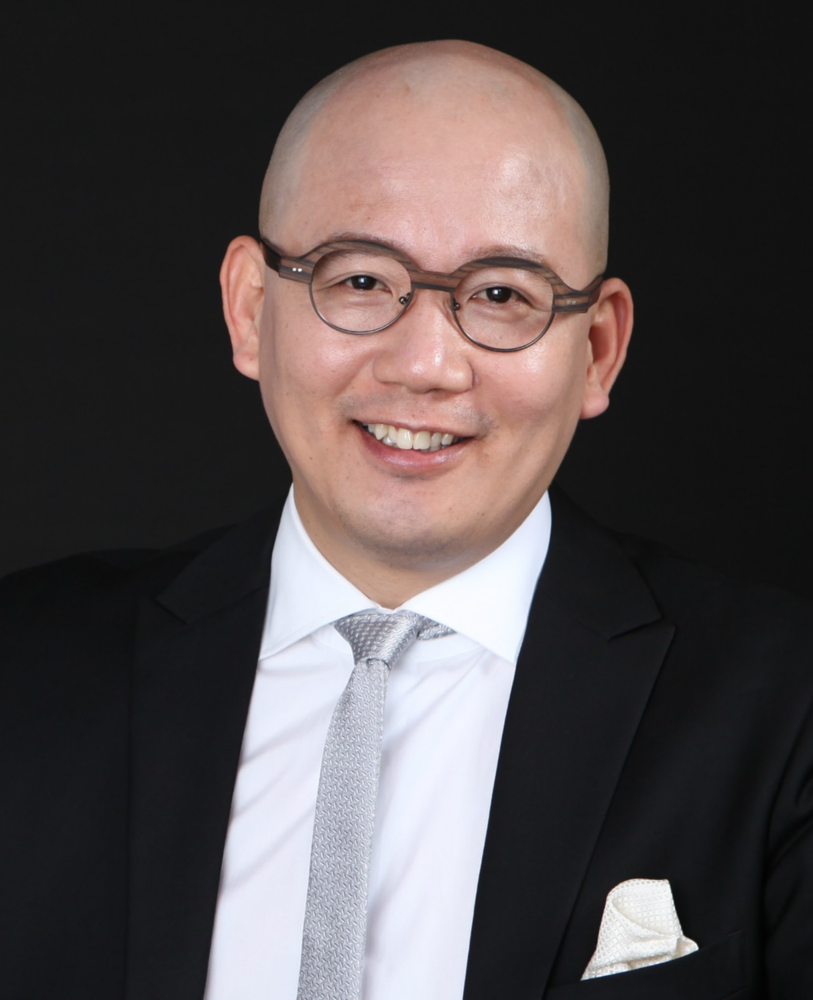
袁岳
零点有数集团董事长

王戈宏
新派公寓创始人

王晞
仁恒置地副总裁
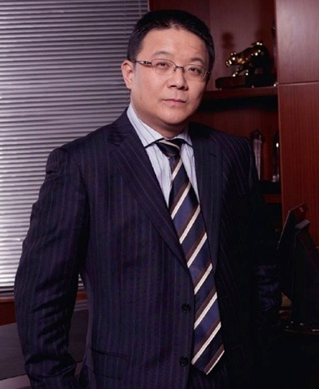
周忻
易居中国主席
娱乐新时代：构建中美文化桥梁

杨铭
泰洋川禾创始人

Wen Zhou
3.1 Phillip Lim 首席执行官
温晓东
韬蕴资本集团创始人及首席执行官
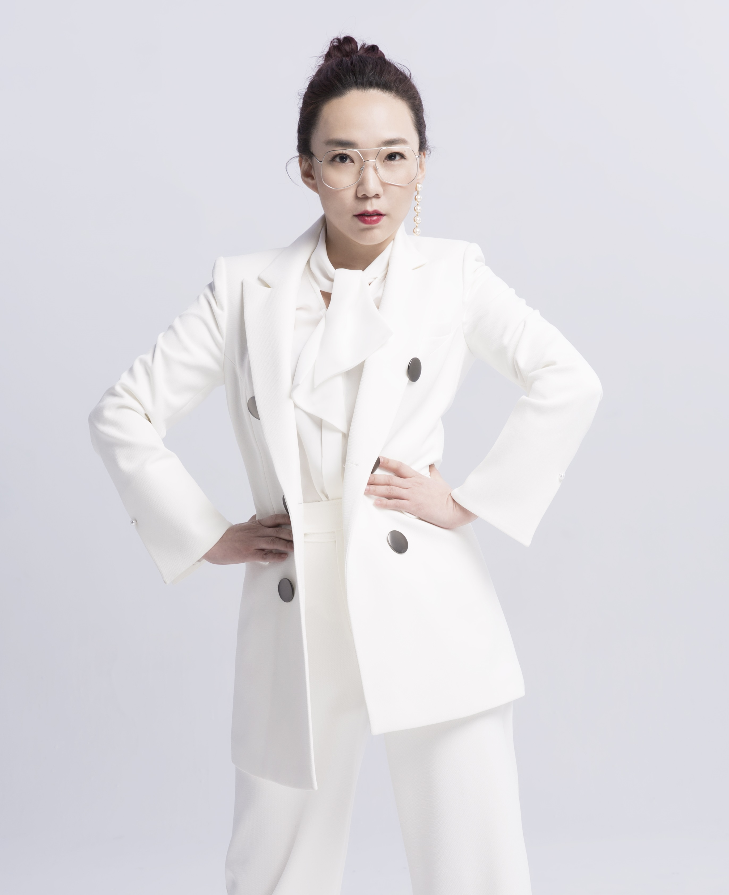
马薇薇
米果文化副董事长
企业可持续发展与社会责任

王振耀
国际公益学院院长

潘江雪
真爱梦想公益基金会发起人
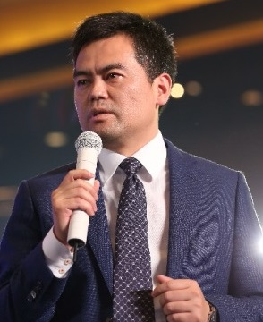
邓飞
《凤凰周刊》编委

朱旭东
易居中国联合创始人
社会创新
王一舟
暴⾛漫画企业总监

王赛
益桥创始人
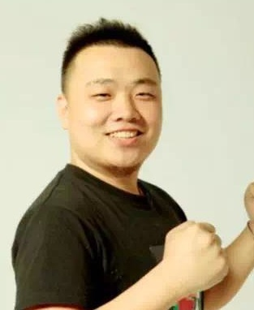
苗世民
WABC创始人

南笙
知名女演员
INNO Talk
袁岳
零点有数集团董事长
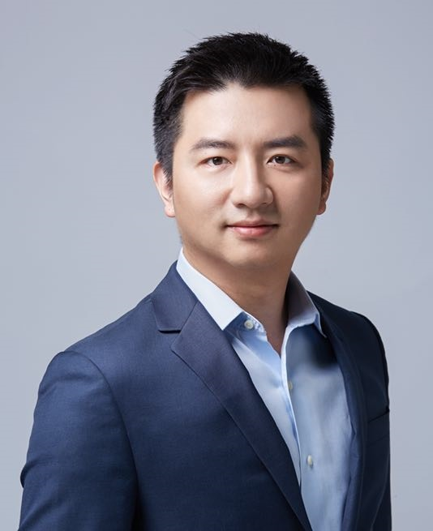
金城
洪泰基金董事总经理
马薇薇
米果文化副董事长
职业发展论坛
杨铭
泰洋川禾创始人
应书岭
英雄互娱创始人
戴科彬
猎聘创始人
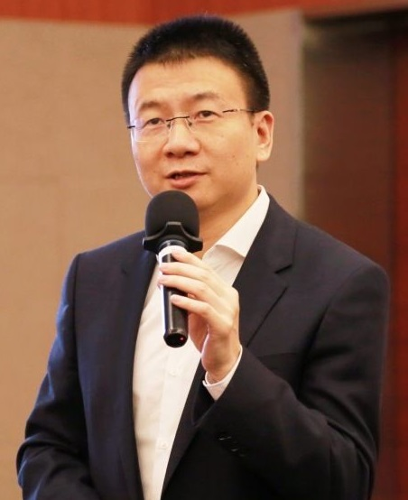
张诚
招商银⾏股份有限公司⼈⼒资源部总经理
闭幕式
王振耀
国际公益学院院长

崔天凯
中华人民共和国驻美国特命全权大使
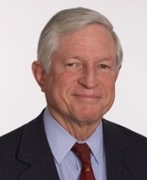
Pete Walker
麦肯锡资深合伙人

王高飞
微博CEO
主持人

江予菲
上海电视台第⼀财经电视主持⼈

陈⼀佳
路透社北美华⼈财经女主播

林国宇
College Daily传媒集团创始⼈

曹可凡
内地节⽬主持⼈

⾼正
CM公益传播联合创始⼈

谢承润
猎聘北美CEO